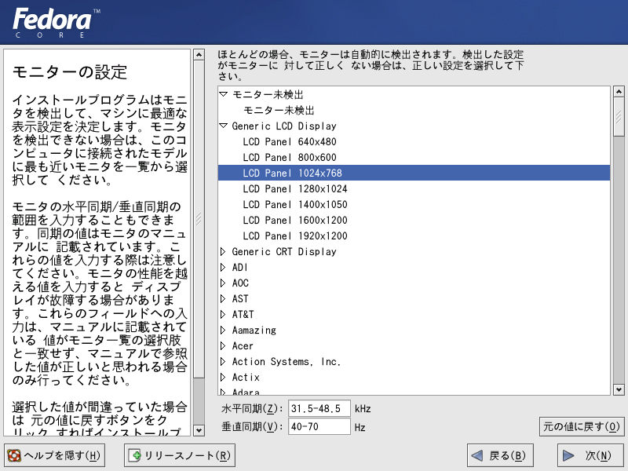
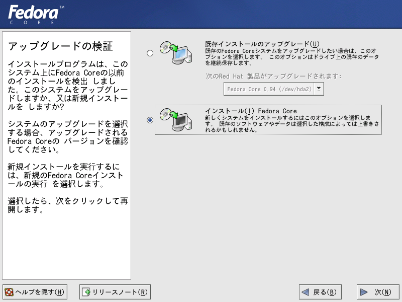
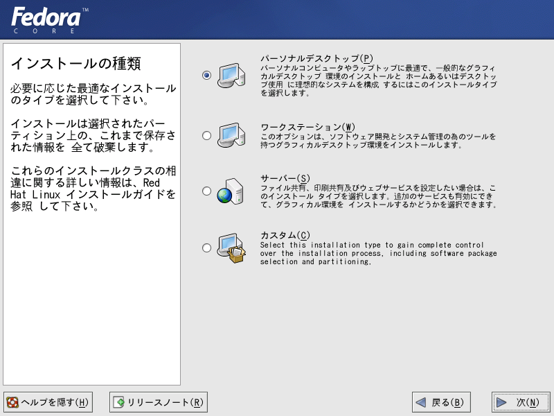

フェドーラ リナックス（Yarrow)のインストール手順について その（２）
４．モニターの設定を行います。一覧にない場合は、Generic（汎用）モニターを選択します。下の図は、汎用の液晶パネル(XGA)に設定する場合の例です。

５．アップグレードの選択

６．デスクトップとして使用する場合は、「パーソナルデスクトップ」にしておくのが無難です。すべての機能をインストールするには、「カスタム」を選ぶことになります。
次へ<NEXT>